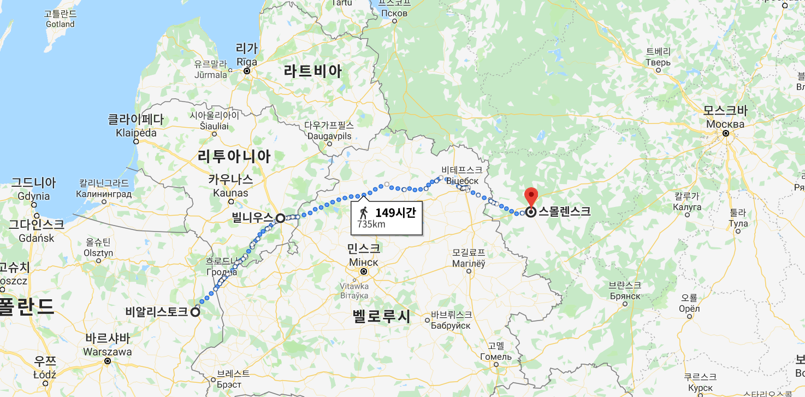
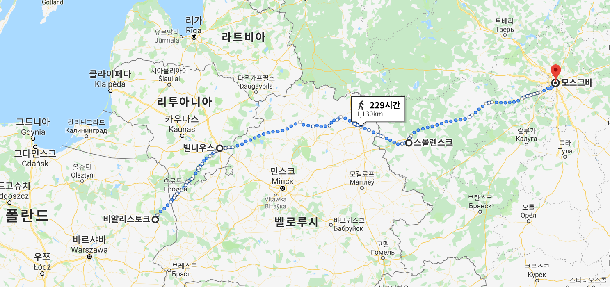

1812년 그랑다르메(Grande Armée)의 내부 상황 (1편)
게시: 2019-09-16T06:30:34+09:00
1812년 5월18일, 아직 폴란드 푸오츠크(Płock)에 있던 나폴레옹의 의붓아들이자 이탈리아 왕국의 부왕(viceroi)인 외젠 보아르네(Eugène de Beauharnais)가 당시 임신 중이었던 부인 아우구스타(Auguste Amalie Ludovika Georgia von Bayern)에게 보낸 편지에는 이런 구절이 있었습니다. "아직 많은 사람들이 전쟁이 실제로 발발할 거라고는 믿지 않는다는 거 아시오 ? 사람들 말로는 전쟁이 일어날 턱이 없다고 하오. 이유는 양측 모두 전쟁으로 얻을 것이 하나도 없기 때문이라는 것이라오. 결국 협상으로 이 상황이 종결될 것이라고 다들 말하고 있소."

(바이에른 왕국의 공주 아우구스타입니다. 외젠과의 결혼은 순수하게 정략적으로 맺어진 것이었으나, 외젠이나 아우구스타나 서로를 정말 열렬히 사랑하게 되었습니다. 그래서 나폴레옹이 몰락한 뒤에도 외젠은 처가댁에서 후한 대접을 받으며 잘 살았습니다.)
실제로 중서부 유럽의 프랑스나 독일, 이탈리아 출신 사람들이 볼 때 황량한 초원이 끝없이 펼쳐진 머나먼 러시아로 쳐들어간다는 것은 굉장히 뜬금없는 일이었습니다. 그런 가난하고 낙후된 나라에 쳐들어가서 얻을 것도 없고, 무엇보다 너무 먼 나라인데다 너무 넓은 나라였기 때문입니다. 러시아가 쳐들어온다면 맞서 싸우겠으나, 굳이 그 먼 곳으로 쳐들어갈 이유가 없었습니다. 그러니 이런 소문이 돈 것도 무리가 아니었습니다. 궁극적 목표야 러시아를 다시 대륙봉쇄령 틀 안으로 끌어들이는 것이었지만, 나폴레옹 본인조차 이번 전쟁의 전술적 목표가 무엇인지 명확하게 밝히지 못했습니다. 나폴레옹은 큰 전투 두어번이면 러시아와의 평화 조약을 끌어낼 수 있을 것이라고 큰 소리치고 있었습니다. 그러나 그러기 위해서는 구체적으로 어디까지 공략해야 할지는 본인도 몰랐습니다. 나폴레옹은 한번은 스몰렌스크(Smolensk)를 점령하고 겨울을 나면 러시아가 항복할 것이라고 말했다가, 다음 번에는 모스크바야말로 러시아 제국의 진정한 수도이므로 여름이 끝나기 전에 거기를 점령하면 모든 것이 끝난다고 말하기도 했습니다. 이렇게 나폴레옹 본인부터 오락가락하는 판국이니 누가 보더라도 이번 전쟁은 목표가 없는 늪 같아 보였습니다.
 
(스몰렌스크까지의 거리도 사실 가까운 편은 아니지만 모스크바까지 가는 것은 더욱 멀었습니다. 당시 비교적 쾌속으로 행군하던 프랑스군도 하루 25km 정도가 평균이었으니, 스몰렌스크까지 가는 것도 전투가 없고 모든 것이 순조로와도 대략 29일 걸립니다.)
그런 상황에서 네만(Nieman) 강 서안으로 집결하라는 나폴레옹의 소집 명령을 받은 프랑스 및 동맹국의 장교들과 병사들은 과연 어떤 기분으로 고향을 떠났을까요 ? 아마 즐거운 마음으로 군대에 가는 사람은 거의 없을 것입니다. 특히 남의 나라 전쟁에 억지로 끌려가는 사람들은 더욱 그랬을 것입니다. 그런데 그게 꼭 그렇지만도 않았던 모양입니다. 이들 대부분은 나폴레옹이 그들을 위해 준비해놓은 것이 무엇인지 전혀 모른채 길을 떠났습니다. 이들에겐 네만(Nieman) 강 서쪽 어딘가였을 최종 집결지의 위치와 집결 목표일은 물론 몇월 며칠에는 어느 마을에, 몇월 며칠에는 어느 도시에 도착하라는 매우 상세한 중간 일정표까지 주어졌습니다만, 정작 어느 나라를 치기 위해서 간다는 것은 전혀 알려지지 않았습니다. 심지어 황실 근위대 소속 포병대의 불라르(Boulart) 대령이라는 사람도 폴란드에 도착하고 나서도 편지에 이렇게 불평했습니다. "미래는 불투명하고 앞으로 어떻게 풀릴지 알 방법이 없다. 뭔가 낌새가 보이는 것도 없고 상상력을 자극한 아무 단서가 없으며, 열정을 불러일으킬 것이 아무 것도 없다." 물론 소문은 자자했습니다. 원래 지휘부가 비밀을 엄격하게 지킬 수록 아랫것들의 상상력은 나래를 펼치게 되어있습니다. 나폴레옹이 러시아를 치러 간다는 소문이 가장 유력했지만 그럴 리가 없고 모든 것은 인도에 쳐들어가기 위해 나폴레옹과 알렉산드르가 짜고치는 고스톱이라는 소문도 파다했습니다. 푸제(Pouget) 장군이라는 사람은 이렇게 적었습니다. "우리는 러시아인들과 연합하여 러시아 제국의 광활한 사막을 지나 영국놈들의 소유인 인도를 공격하러 간다고 생각했다." 세계 지리에 어두웠던 어떤 병사는 이 소문을 잘못 알아듣고 집으로 보내는 편지에 이렇게 적어서 동네 사람들을 더더욱 혼란스럽게 했습니다. "우리는 육로를 통해 영국으로 진격하기 위해 러시아로 가고 있습니다." 하지만 좀더 배운 것이 있고 이성적인 병사들도 많았습니다. 그들이 만들어낸 소문은 더욱 그럴싸 해서, 나폴레옹과 알렉산드르가 비밀 협약을 맺고 프랑스-러시아 연합군이 오스만 투르크를 공격하기로 했으며, 먼저 투르크의 유럽-아시아 영토를 정복한 뒤에야 인도를 공격할 것이라는 소문이 공공연하게 돌았습니다. 이 소문은 워낙 그럴 듯하여, 심지어 알렉산드르에게 직접 제출된 스파이들의 첩보 보고서에도 '나폴레옹의 진짜 목적은 러시아를 짧고 거센 공격으로 굴복시킨 뒤 그대로 러시아군 10만과 함께 콘스탄티노플을 공격한 뒤 이어서 이집트를 공략하고, 최종적으로는 벵갈을 침공하는 것'이라고 적힐 정도였습니다. 기록에는 없지만 어쩌면 알렉산드르도 나폴레옹의 의중이 그럴 것이라고 믿었을지도 모릅니다.
(야콥 발터(Jakob Walter)는 뷔르템베르크 출신의 석공이 원래 직업이었습니다. 그는 1806년에 최초로 징집되어 폴란드 전역에서 복무한 이후 소집과 소집 해제를 반복하다가 1812년 다시 소집되어 러시아로 향했습니다. 러시아로 갈 때 그의 나이는 24세였고, 티푸스에 걸렸으나 다행히 살아남아 회고록도 썼습니다.)
좀더 스케일이 작은 소문도 있었습니다. 슈투트가르트(Stuttgart) 출신의 야콥 발터(Jakb Walter) 일병이 들은 소문은 방향이 정반대였습니다. 그 소문에 따르면 그들은 발트 해변 어딘가의 큰 항구로 가서, 거기서 배를 타고 스페인으로 가게 되어있었습니다. 그런데 상당수 병사들에게는 어디로 가든 상관이 없었던 모양입니다. 병사들의 편지나 기록들은 꽤 낭만적인 전망을 그린 것도 많았습니다.
"이 모든 소문은 사실 내겐 별 상관이 없다. 우리가 오른쪽으로 가든 왼쪽으로 가든 혹은 그냥 가운데로 쭉 가든 뭔 상관이겠는가 ? 내가 진짜 세상 속으로 가고 있다는 것만 중요하다." "내 어린 시절 동네 친구들 거의 모두가 군대에 모여있었다. 그들은 이미 영광을 차곡차곡 쌓고 있는 중이었다. 사실 그냥 있으면 세상의 짐짝 신세인 내가, 그들이 전쟁터에서 돌아올 때까지 수줍게 손을 모은 채 기다리고만 있을 수 있었겠는가 ? 난 그때 18살이었다." "아버지 어머니, 우리는 '대인도 제도' 혹은 어쩌면 '에집(Egippe)'으로 간다고 해요. 사실 어느 쪽으로 가든 상관없어요. 저는 우리가 세상 끝까지 가봤으면 해요." 이런 태평한 상상력과 그 해 연말 그들이 처할 운명을 비교해보면 상당히 한심하게 느껴질 수 있습니다. 그러나 그들 중 상당수는 태어난 동네에서 10km 밖으로 나가본 적이 없는 시골뜨기 청년들이었습니다. 그러니 영국이 어디 붙은 나라인지 인도라는 곳이 섬인지 육지인지, 러시아와 이집트 사이에 어떤 나라가 있는지 알 방법도 없었고 그저 모든 것이 신기하고 들뜬 모험처럼 느껴진 것도 무리가 아닙니다. 물론 이런 근거없는 소문들과 억측에도 불구하고, 그래도 대부분의 사람들은 원정 대상이 러시아라는 것은 제대로 알고 있었습니다. 나폴레옹의 러시아 원정군 중 절반 정도는 프랑스 출신이 아닌 폴란드, 이탈리아, 독일, 네덜란드, 스위스 등 다양한 국가 출신이었고 심지어 스페인 출신도 있었습니다. 프랑스 병사들과 폴란드 병사들은 워낙 나폴레옹 개인에 대한 충성심이 강했으니 그렇다치고, 다른 나라 출신들은 러시아 원정길에 대해 어떤 생각들을 가지고 있었을까요 ? Source : 1812 Napoleon's Fatal March on Moscow by Adam Zamoyski